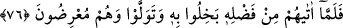

Sa‘lebe koyun edindi. Derken koyunları böceklerin çoğaldığı gibi çoğaldı. Hatta
Medine sokakları koyunlarına dar gelmeye başladı. O da bir vâdiye gitti. Cemaati de
terk etti. Sadece öğle ve ikindi namazlarını cemaatle kılmaya başladı. Daha sonra
koyunları o kadar çoğaldı ve arttı ki (Medine’den) uzak bir yere çekildi. Nihayet hem
cemaatten hem de Cuma namazından ayrıldı.
Rasûlullah onu sorunca: “Malı çoğaldı, bir vâdiye sığmaz oldu, birçok vâdi ve
sahrayı kapladı bu yüzden de uzaklara gitti.” dediler.
Bunun üzerine Peygamber (a.s.): “Eyvah! Yazık oldu Sa‘lebe’ye.” buyurdu. Nihayet
Allah Teâlâ’nın “Onların mallarından zekat al!” (et-Tevbe 9/103) emri gelince
Peygamber (a.s.) zekatları toplamak üzere birisi Ensar’dan diğeri Süleymoğulları’ndan
olmak üzere iki kişiyi görevlendirip onlara zekat emrini ve zekatı alınacak hayvanların
yaşlarını içeren bir yazı verdi ve onlara bölgedeki insanlardan zekatlarını almalarını
emretti.
İki görevliyi yöre halkı zekatları ile karşıladılar. Bu arada onlar Sa‘lebe’ye de
uğradılar, ondan zekatını vermesini istediler ve ona (zekât ile ilgili) farzları içeren
Rasûlullah (s.a.)’in mektubunu okudular. Sa‘lebe:
“Bu cizyeden başka birşey değil! Bu cizyenin benzerinden başka bir şey değil! Hele
şimde siz gidin de ben bir düşünüp taşınayım.” dedi.[209]
76. Ne zaman ki Allah, lütfundan onlara verdi, O’na cimrilik edip yüz çevirdiler.
Onlar yüz çeviren kimselerdir.
“Ne zaman ki Allah, lütfundan” kereminden “onlara” mal “verdi, O’na cimrilik
edip” o maldaki Allah’ın hakkına (zekata) mâni oldular “yüz çevirdiler.” Allah’a
itaatten ve O’na verdikleri sözden döndüler. “Onlar yüz çeviren kimselerdir.” Âdetleri
yüz çevirmek olan bir topluluktur.
İki zekat görevlisi dönüp Rasûlullah (a.s.)’a geldiklerinde daha onlar olup bitenler
hakkında bir şey söylemeden Rasûlullah (a.s.) iki kere “Eyvah! Sa‘lebe’ye yazık oldu.”
buyurdu. Bunun üzerine bu âyetler indi.
Hz. Ömer (r.a.) hemen devesine binip Sa‘lebe’ye gitti ve “Yazıklar olsun sana ey
Sa‘lebe! Helak oldun. Allah senin hakkında şu şu ayetleri indirdi.” dedi. Bunun üzerine
Sa‘lebe zekatını getirdi fakat Peygamber (a.s.): “Allah senin zekatını kabul etmemi
benden men eyledi.” buyurdu.
Bunun üzerine Sa‘lebe, başına toprak serpmeye başladı. Bunu, münâfıklıktan tevbe
ettiği için değil de zekatının müslümanlarla birlikte kabul edilmemesinin kendisine
verdiği utançtan dolayı yapmıştı.
Peygamber (a.s.): “İşte bu, senin amelindir.” buyurdu.[210] Yani, zekatının kabul